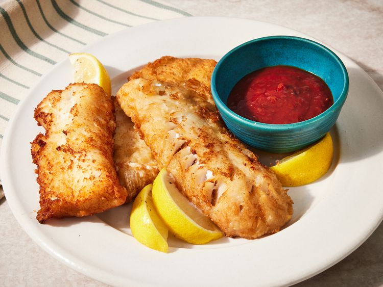

Beer Batter

Description
This beer batter recipe is quick and easy, especially if there's beer already in the house. You can find all the ingredients in a standard kitchen; no fancy ingredients are needed! This batter is great for deep-frying white fish.
Ingredients
- Flour : This homemade beer batter starts with all-purpose flour.
- 1 ¼ cups all-purpose flour
- Cornstarch : Cornstarch ensures an extra crispy, light fry every time.
- Egg : An egg creates a more delicate crust and helps seal in moisture.
- 1 large egg, chilled and beaten
- Seasonings : Season the beer batter with garlic powder, black pepper, and seasoning salt.
- 1 teaspoon seasoning salt
- Beer : Of course, you’ll need beer! A light beer will give you a milder flavor, while a dark beer will have a richer taste. A higher carbonation level will result in an airier result.
- ½ teaspoon ground black pepper
- 1 teaspoon garlic powder
Steps
- Gather all ingredients.
- Combine flour, cornstarch, egg, garlic powder, seasoning salt, and black pepper in a medium bowl.
- Whisk in beer until smooth and thick, similar to pancake batter.
- Use in your favorite recipe. Enjoy!